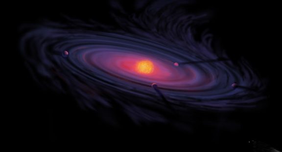
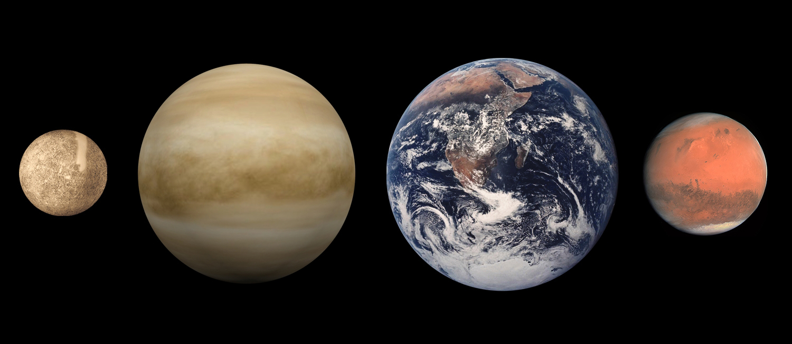
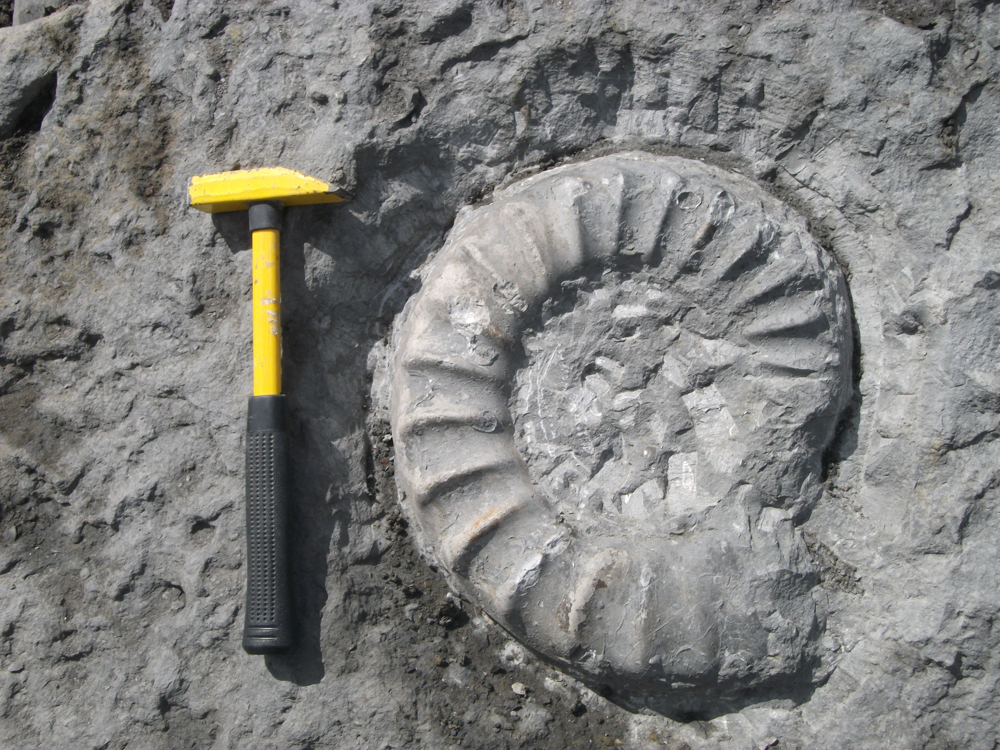

Appunti di Geologia
Prof. Emanuele Tondi — Università di Camerino (UNICAM)
Corso: Mineralogia e Geologia (6 CFU) — Beni Culturali
0. Indice
1. Fondamenti della Geologia
Definizione
La geologia è la scienza che tratta della composizione, della struttura e della storia evolutiva degli strati interni ed esterni della Terra, e dei processi che l'hanno plasmata.
Non si limita alla descrizione: oltre a classificare ciò che si osserva (una roccia, una catena montuosa), la geologia spiega perché quell'oggetto ha quelle caratteristiche e qual è il processo genetico che lo ha formato.
Plutonismo vs Nettunismo
Hutton introdusse il plutonismo: le rocce si formano per consolidamento del magma (da Plutone, dio degli inferi). Si opponeva al nettunismo, che attribuiva origine divina (Nettuno) alla formazione delle rocce.
La diatriba sull'età della Terra
L'attualismo creò un acceso dibattito sull'età della Terra. Tre posizioni:
- Chiesa: Terra creata ~6.000 anni fa (Bibbia) — insufficiente per spiegare qualsiasi processo geologico
- Fisici (Lord Kelvin): stima basata sul raffreddamento per conduzione — superiore ai 6.000 anni ma ancora troppo bassa
- Geologi: con l'attualismo, l'età doveva essere molto maggiore
La diatriba si risolse con la scoperta della radioattività, che fornisce una fonte di calore interna che Kelvin non poteva conoscere.
Attualismo e Uniformitarismo
Principio cardine della geologia: i processi che osserviamo oggi (erosione, sedimentazione, terremoti, vulcanismo) sono gli stessi che hanno operato nel passato. Possiamo usare le velocità attuali per ricostruire la storia geologica («il presente è la chiave del passato»).
L'attualismo si oppone al catastrofismo (eventi improvvisi e unici) e al creazionismo (le specie create dal nulla).
Ripetibilità e verificabilità
Il metodo scientifico richiede che una teoria sia oggettiva, affidabile e verificabile. L'esperimento deve essere ripetibile: se eseguito a Camerino e poi in Giappone, deve produrre lo stesso risultato. Non basta che funzioni in un solo laboratorio.
Padri del metodo: Aristotele → Tommaso d'Aquino → Leonardo da Vinci → Kant → Galileo Galilei (metodo galileiano/induttivo) → Einstein (relatività generale).
Il Metodo Scientifico
Il metodo scientifico (o metodo galileiano / induttivo) si articola in step:
- Osservazione — tutto parte dall'essere curiosi e osservare un fenomeno
- Esperimento — si perturba un sistema per riprodurre l'osservazione
- Correlazione delle misure — si quantifica la perturbazione (pressione, umidità, temperatura…)
- Modello fisico/concettuale — si capisce il meccanismo
- Modello matematico — la formula che riproduce il fenomeno. Senza questa la teoria non è accettata
- Teoria — è valida finché spiega tutte le osservazioni; può essere aggiornata o sostituita se emergono nuove evidenze
Esempio per i Beni Culturali: il travertino
Il travertino (CaCO₃), materiale lapideo ampiamente usato in architettura, con il tempo si ossida formando una patina scura. Questa alterazione dipende da tre fattori interagenti:
- Minerale: ossidazione naturale della roccia
- Animale: inquinamento prodotto dall'uomo
- Vegetale: crescita di muschi e licheni sulla superficie
Ecco l'interazione tra le tre componenti del sistema Gaia applicata alla conservazione dei beni culturali.
Teoria di Gaia
Proposta da James Lovelock, considera il pianeta Terra come un unico sistema integrato in cui le componenti minerale, vegetale e animale interagiscono fortemente. Il pianeta mostra proprietà simili a quelle di un organismo vivente: omeostasi, autoregolazione, retroazione.
Teoria della Deriva dei Continenti (Wegener)
All'inizio del '900, Alfred Wegener pubblicò la teoria della deriva dei continenti, mettendo insieme evidenze già esistenti:
- Similitudine delle linee di costa dei continenti (puzzle)
- Evidenze biologiche (stessi fossili su continenti separati)
- Evidenze mineralogiche e composizionali
I due punti deboli della sua teoria: (1) all'epoca non era dimostrabile il movimento dei continenti; (2) Wegener non aveva una spiegazione convincente su chi spostasse i continenti.
La grande svolta arrivò dopo la Seconda Guerra Mondiale, con l'avvento della tecnologia (sonar, magnetometri, GPS), portando alla moderna tettonica delle placche.

Ritratto di James Hutton (1726–1797): padre della geologia moderna, formulò il principio dell'Uniformitarianismo.

Diagramma del ciclo litogenetico (NPS): processi che collegano rocce ignee, sedimentarie e metamorfiche.
Flash Cards — Fondamenti
📎 Riassunto — Il sito ti spiega
La geologia è la scienza che tratta della composizione, della struttura e della storia evolutiva degli strati interni ed esterni della Terra, e dei processi che l'hanno plasmata. Non si limita a descrivere: oltre a classificare ciò che si osserva, spiega perché quell'oggetto ha quelle caratteristiche e qual è il processo genetico che lo ha formato. Il termine fu usato per la prima volta da Ulisse Aldrovandi nel 1603. Il fondatore della geologia moderna è James Hutton con la sua Teoria della Terra.
Hutton introdusse il plutonismo: le rocce si formano per consolidamento del magma (da Plutone, dio degli inferi). Si opponeva al nettunismo, che attribuiva un'origine divina (Nettuno) alla formazione delle rocce.
Il principio cardine è l'attualismo (o uniformitarismo): i processi geologici che osserviamo oggi — erosione, sedimentazione, terremoti, vulcanismo — sono gli stessi che hanno operato nel passato. «Il presente è la chiave del passato»: possiamo usare le velocità attuali per ricostruire la storia geologica. L'attualismo si oppone al catastrofismo (eventi improvvisi e unici) e al creazionismo.
L'attualismo generò un acceso dibattito sull'età della Terra con tre posizioni: la Chiesa sosteneva circa 6.000 anni, insufficienti per qualsiasi processo geologico; i fisici guidati da Lord Kelvin stimavano un'età basata sul raffreddamento per conduzione, superiore ai 6.000 anni ma ancora troppo bassa; i geologi, con l'attualismo, deducevano un'età enormemente maggiore. La diatriba si risolse con la scoperta della radioattività, fonte di calore interna che Kelvin non poteva conoscere.
Il metodo scientifico galileiano (o induttivo) si articola in sei step. Primo, Osservazione del fenomeno. Secondo, Esperimento: si perturba il sistema per riprodurre l'osservazione. Terzo, Correlazione delle misure: si quantificano pressione, umidità, temperatura. Quarto, Modello fisico concettuale: si capisce il meccanismo. Quinto, Modello matematico: la formula che riproduce il fenomeno — senza questa la teoria non è accettata. Sesto, Teoria: valida finché spiega tutte le osservazioni, ma sempre aggiornabile. Il metodo richiede oggettività, affidabilità, verificabilità, con esperimenti ripetibili: eseguito a Camerino o in Giappone, deve produrre lo stesso risultato. La linea storica dei padri del metodo: Aristotele, Tommaso d'Aquino, Leonardo da Vinci, Kant, Galileo Galilei, Einstein — che impiegò vent'anni per passare dal modello concettuale della relatività generale al modello matematico.
Un esempio applicativo ai Beni Culturali: il travertino (CaCO₃), materiale lapideo usato in architettura, sviluppa una patina scura per ossidazione. L'alterazione dipende da tre fattori interagenti: minerale per ossidazione naturale, animale per inquinamento antropico, vegetale per muschi e licheni. È l'interazione tra le tre componenti del sistema Gaia applicata alla conservazione.
La Teoria di Gaia, proposta da James Lovelock, considera il pianeta Terra come un unico sistema integrato in cui le componenti minerale, vegetale e animale interagiscono fortemente, mostrando omeostasi, autoregolazione e retroazione.
La Teoria della Deriva dei Continenti di Alfred Wegener raccolse tre evidenze: similitudine delle linee di costa, stessi fossili su continenti oggi separati, evidenze mineralogiche e composizionali. Due punti deboli: all'epoca non era dimostrabile il movimento dei continenti, e Wegener non aveva una spiegazione su chi li spostasse. La svolta arrivò dopo la Seconda Guerra Mondiale con sonar, magnetometri e GPS, portando alla moderna tettonica delle placche.
Ricorda: primo, l'attualismo è il principio fondante — i processi di oggi spiegano il passato geologico. Secondo, il metodo scientifico ha sei passi esatti e senza modello matematico la teoria non è accettata. Terzo, Wegener aveva ragione sui fatti ma mancava il meccanismo; la tettonica delle placche lo ha fornito.
2. Sistema Solare e Pianeta Terra
Formazione del Sistema Solare
Il Sistema Solare si è formato circa 4,6 miliardi di anni fa da una nebulosa di gas interstellari in contrazione. La temperatura iniziale era molto bassa, con abbondanza di idrogeno ed elio.
Il Sole è una stella di seconda generazione (popolazione I): deriva dall'esplosione di una stella precedente, quindi contiene più elementi pesanti. Se fosse stata di prima generazione, non ci sarebbero pianeti rocciosi.
Accensione del Sole e differenziazione planetaria
Nella parte centrale della nebulosa, l'aumento di densità innescò le reazioni termonucleari (fusione idrogeno → elio), accendendo la stella. L'onda d'urto risultante:
- Spostò gli elementi leggeri verso l'esterno → pianeti gassosi (Giove, Saturno)
- Lasciò gli elementi pesanti vicino al Sole → pianeti rocciosi terrestri (Mercurio, Venere, Terra, Marte)

Pianeti del Sistema Solare in scala dimensionale (

Rappresentazione artistica di un disco protoplanetario: gas e polveri in rotazione attorno a una stella neonata.

Confronto delle dimensioni relative dei pianeti terrestri: Mercurio, Venere, Terra e Marte.

La celebre fotografia «Blue Marble» della Terra vista dall'Apollo 17 (7 dicembre 1972).

Diagramma dei cinque strati principali dell'atmosfera terrestre: troposfera, stratosfera, mesosfera, termosfera, esosfera.

Rappresentazione artistica della magnetosfera terrestre: lo scudo che devia il vento solare.
Il Sole e il Sistema Solare
- Il Sole rappresenta il 90% della massa del Sistema Solare
- È una stella di popolazione I (seconda generazione, ricca di elementi pesanti). La Popolazione II è più antica e povera di metalli. La nomenclatura è controintuitiva: I = recente, II = antica
- Alta metallicità = cruciale per la formazione dei pianeti rocciosi
- Asteroidi: fascia tra Marte e Giove. Due ipotesi: distruzione pianeta preesistente o massa insufficiente per aggregarsi
- Eliopausa: confine dell'eliosfera generata dal vento solare, protegge dai raggi cosmici
- La formazione del sistema fu rapida: pochi milioni di anni contro i 4,6 miliardi di età attuale
Dati fisici della Terra
- Diametro equatoriale: ~12.756 km
- Diametro polare: ~12.714 km (schiacciamento di soli ~42 km — trascurabile a occhio!)
- Raggio medio: 6.371 km
- Accelerazione di gravità: 9,8 m/s² (l'effetto che percepiamo come il peso)
- Velocità di fuga: ~11.000 m/s (necessaria per andare in orbita)
- Età: ~4,54 miliardi di anni
Flash Cards — Sistema Solare
📎 Riassunto — Il sito ti spiega
Qui affrontiamo le origini del Sistema Solare e i dati fisici del pianeta Terra. Il Sistema Solare si è formato circa quattro virgola sei miliardi di anni fa da una nebulosa di gas interstellari in contrazione, con temperatura iniziale molto bassa e abbondanza di idrogeno ed elio. Il Sole è una stella di seconda generazione, popolazione uno: deriva dall'esplosione di una stella precedente, quindi contiene più elementi pesanti. Se fosse stato di prima generazione, popolazione due, più antica e povera di metalli, non esisterebbero pianeti rocciosi.
Nella parte centrale della nebulosa, l'aumento di densità innescò le reazioni termonucleari, fusione idrogeno in elio, accendendo la stella. L'onda d'urto risultante differenziò il materiale circumstellare: gli elementi leggeri furono spinti verso l'esterno, formando i pianeti gassosi come Giove e Saturno; gli elementi pesanti rimasero vicino al Sole, originando i pianeti rocciosi terrestri: Mercurio, Venere, Terra, Marte. Il Sole rappresenta il novanta per cento della massa dell'intero Sistema Solare. La formazione fu rapida: pochi milioni di anni contro i quattro virgola sei miliardi di età attuale.
La fascia degli asteroidi tra Marte e Giove ha due possibili spiegazioni: distruzione di un pianeta preesistente o massa insufficiente per aggregarsi. L'eliopausa è il confine dell'eliosfera generata dal vento solare, che protegge il sistema dai raggi cosmici. Venendo alla Terra, ecco i dati fisici fondamentali per l'esame. Diametro equatoriale: circa dodicimilasettecentocinquantasei chilometri. Diametro polare: circa dodicimilasettecentoquattordici chilometri. Lo schiacciamento polare è di soli quarantadue chilometri, praticamente impercettibile: la Terra è una sfera quasi perfetta. Raggio medio: seimilatrecentosettantuno chilometri. Accelerazione di gravità: nove virgola otto metri al secondo quadrato. Velocità di fuga: circa undicimila metri al secondo, necessaria per vincere la gravità terrestre e andare in orbita. Età: circa quattro virgola cinquantaquattro miliardi di anni.
Una considerazione importante: la Terra non è grande come sembra. Il diametro è solo circa dodici volte la lunghezza dell'Italia. Il pianeta è un sistema finito: le perturbazioni umane hanno un impatto reale e misurabile, non diluibile in uno spazio infinito. La nomenclatura delle popolazioni stellari è controintuitiva: Popolazione uno uguale stelle recenti, ricche di metalli, come il Sole; Popolazione due uguale stelle antiche, povere di metalli. La presenza di elementi pesanti nella nebulosa progenitrice, provenienti da una supernova precedente, è la condizione necessaria per la formazione di pianeti rocciosi.
Ricorda: primo, la differenziazione planetaria è guidata dall'onda d'urto dell'accensione solare: elementi pesanti vicini, leggeri lontani. Secondo, il Sole è popolazione uno, di seconda generazione: senza elementi pesanti niente pianeti rocciosi. Terzo, la Terra è una sfera quasi perfetta con accelerazione di gravità nove virgola otto metri al secondo quadrato, velocità di fuga circa undicimila metri al secondo ed età quattro virgola cinquantaquattro miliardi di anni.
3. Tempo Geologico
La Terra ha 4,54 miliardi di anni. Il tempo geologico è il «calendario del passato» che registra gli eventi della storia terrestre. Le rocce che permettono questa datazione sono principalmente le rocce sedimentarie, che si depositano a strati e catturano informazioni sull'ambiente di formazione.
Gerarchia del tempo geologico
- Eoni (i più lunghi) → Ere → Periodi → Epoche → Età (le più corte)
- Ogni unità contiene quelle inferiori (gli eoni contengono le ere, le ere i periodi, ecc.)
- Più si scende nella gerarchia, maggiore è la risoluzione temporale
I quattro Eoni
- Adeano — 4,5 → 4,0 Ga. «Eone nascosto»: quasi nessuna informazione
- Archeano — 4,0 → 2,5 Ga. Prime forme di vita procariote
- Proterozoico — 2,5 Ga → 541 Ma. Vita primordiale più complessa
- Fanerozoico — 541 Ma → oggi. Vita visibile, è suddiviso in ere: Paleozoico, Mesozoico, Cenozoico
Quando il principio fallisce: intrusioni magmatiche
Il principio di sovrapposizione (strati più in basso = più antichi) vale per le rocce sedimentarie. Non vale per le rocce ignee intrusive: un plutone risale dal basso e si inserisce in rocce preesistenti → la roccia più recente (intrusione) si trova sotto rocce più antiche (incassanti).
Principio di sovrapposizione stratigrafica
Nelle rocce sedimentarie, gli strati più in basso sono più antichi di quelli in alto (i sedimenti si depositano dall'alto). Questo principio può essere contraddetto da intrusioni magmatiche (una roccia ignea intrusiva può essere più recente delle rocce che la sovrastano).

Strati sedimentari del Grand Canyon — esempio classico di sovrapposizione stratigrafica.

La spirale del tempo geologico: 4,6 miliardi di anni di storia della Terra, dall'Adeano a oggi.

Fossile di ammonite: fossile guida fondamentale per la datazione relativa del Mesozoico.

Fossile di trilobite (Phacops rana): artropode marino estinto, fossile guida essenziale per il Paleozoico.

Scala dei tempi geologici (USGS): dal Precambriano al Quaternario con eoni, ere, periodi ed epoche.
Registrazione degli eventi
Ogni strato sedimentario registra le condizioni ambientali del periodo: chimismo degli oceani, composizione dell'atmosfera, eventi catastrofici. Esempio: a 65 Ma, uno straterello su tutti gli oceani contiene sferule di vetro dall'impatto del meteorite che estinse i dinosauri.
Perché il Fanerozoico occupa 3/4 della carta?
È un bias di completezza dei dati, non un'accelerazione degli eventi. Come nei cataloghi sismici INGV: negli ultimi 100 anni registriamo terremoti di M 4.5, mentre di 800 anni fa abbiamo notizia solo dei più forti. Dell'Adeano non abbiamo nemmeno una suddivisione interna.
⚠️ Attenzione all'esame: Era vs Periodo
Giurassico è un PERIODO dell'era Mesozoica. Dire «era giurassica» è come chiamare «anno febbraio» — si sbaglia categoria. L'era è il Mesozoico (Triassico, Giurassico, Cretacico).
La Carta Cronostratigrafica Internazionale
Standard globale accettato dalla Commissione Internazionale di Stratigrafia. Tre colonne su quattro riguardano gli ultimi 500 milioni di anni: le informazioni sono concentrate nei tempi più recenti, non perché nel passato non sia successo nulla, ma perché abbiamo più dati.
Flash Cards — Tempo Geologico
📎 Riassunto — Il sito ti spiega
In questo capitolo affrontiamo il tempo geologico, il calendario del passato che registra gli eventi della storia terrestre. La Terra ha quattro virgola cinquantaquattro miliardi di anni. Le rocce che permettono questa datazione sono principalmente le rocce sedimentarie, che si depositano a strati e catturano informazioni sull'ambiente di formazione: ogni strato è una pagina del libro della storia del pianeta.
La gerarchia del tempo geologico va dal più lungo al più corto: Eoni, Ere, Periodi, Epoche, Età. Ogni unità contiene quelle inferiori; più si scende, maggiore è la risoluzione temporale. I quattro Eoni sono: Adeano, da quattro virgola cinque a quattro virgola zero miliardi di anni, detto eone nascosto perché non abbiamo quasi nessuna informazione geologica; Archeano, da quattro a due virgola cinque miliardi di anni, con le prime forme di vita procariote e atmosfera priva di ossigeno; Proterozoico, da due virgola cinque miliardi di anni a cinquecentoquarantuno milioni di anni fa, con vita primordiale più complessa e comparsa dell'ossigeno atmosferico; Fanerozoico, da cinquecentoquarantuno milioni di anni fa a oggi, l'eone della vita visibile, suddiviso in tre ere: Paleozoico, Mesozoico, Cenozoico.
Il principio di sovrapposizione stratigrafica è fondamentale: nelle rocce sedimentarie, gli strati più in basso sono più antichi di quelli in alto. Attenzione all'eccezione: questo principio non vale per le rocce ignee intrusive. Un plutone risale dal basso e si inserisce in rocce preesistenti: la roccia più recente, l'intrusione magmatica, si trova sotto rocce più antiche, le incassanti, violando apparentemente il principio. Ogni strato sedimentario registra le condizioni ambientali del periodo di formazione. Un esempio lampante: a sessantacinque milioni di anni fa, al limite Cretacico-Paleogene, fine del Mesozoico, su tutti gli oceani del mondo si trova uno straterello contenente sferule di vetro, firma dell'impatto del meteorite che causò l'estinzione dei dinosauri.
La Carta Cronostratigrafica Internazionale dedica tre colonne su quattro agli ultimi cinquecento milioni di anni, il Fanerozoico. È un bias di completezza dei dati: più ci avviciniamo al presente, più informazioni abbiamo. Attenzione all'esame: Giurassico è un PERIODO, non un'era. L'era è il Mesozoico, che comprende Triassico, Giurassico e Cretacico. Dire era giurassica è come chiamare anno febbraio. È un errore che il Prof. Tondi sottolinea con forza.
Ricorda: primo, la gerarchia è Eoni, Ere, Periodi, Epoche, Età; il Fanerozoico si divide in Paleozoico, Mesozoico, Cenozoico. Secondo, il principio di sovrapposizione vale per le sedimentarie ma fallisce con le intrusioni magmatiche. Terzo, Giurassico è un PERIODO, non un'era; il bias di completezza dei dati spiega perché il Fanerozoico occupa tre quarti della carta cronostratigrafica.
4. Struttura Interna della Terra
🌍 Crosta Continentale
- Spessore: ~35 km
- Ricca di Si, Al, O
- Rocce chiare e leggere
- Graniti, quarzo, feldspati
🌊 Crosta Oceanica
- Spessore: 5-10 km
- Ricca di Fe, Mg
- Rocce scure e pesanti
- Basalti, olivina, pirosseni
L'interno del pianeta si classifica secondo due criteri: composizione chimica e comportamento reologico.
Classificazione composizionale (chimica)
- Crosta (0–35/70 km):
- Crosta continentale: 35 km media, ricca di Si, Al, O (elementi leggeri). Rocce come graniti.
- Crosta oceanica: 5–10 km, più ricca di Fe e Mg (elementi pesanti). Rocce come basalti.
- Discontinuità di Mohorovičić (Moho): separa crosta da mantello.
- Mantello (fino a 2.900 km):
- Composto quasi esclusivamente da olivina (Fe, Mg, Si, O).
- Aumentano progressivamente Fe e Mg rispetto a Si e Al.
- Discontinuità di Gutenberg a 2.900 km: separa mantello da nucleo.
- Nucleo esterno (2.900–5.155 km): liquido, composto da Fe + elementi leggeri (S, Ni).
- Nucleo interno (5.155–6.371 km): solido, quasi esclusivamente Fe (la pressione è troppo alta per formare minerali).
Discontinuità di Lehmann a 5.155 km: separa nucleo esterno da nucleo interno.

Sezione schematica della Terra con crosta (1a/1b), mantello (2), nucleo esterno (3a) e interno (3b).

Discontinuità: Mohorovičić (crosta-mantello), Gutenberg (mantello-nucleo), Lehmann (nucleo esterno-interno).
La Reologia
Scienza che studia il comportamento dei materiali sottoposti a sforzo. Tre comportamenti:
- Fragile: il corpo si rompe (terremoti in superficie)
- Plastico: si deforma permanentemente senza rompersi (pieghe in profondità)
- Fluido/viscoso: il materiale fluisce; con tempi geologici anche un solido può fluire
Lo stesso materiale può comportarsi in modo fragile o plastico in base a temperatura e pressione.
Spessore della litosfera
Variabile: ~150 km sotto i continenti, più sottile sotto gli oceani. L'astenosfera è più calda per la presenza di elementi radioattivi il cui decadimento produce calore aggiuntivo.
Classificazione reologica (comportamento fisico)
- Litosfera (0–100/150 km): rigida, fredda. Include crosta + parte del mantello superiore. È frammentata in placche tettoniche.
- Astenosfera (100–350/400 km): calda, plastica, parzialmente fusa. Si comporta come un fluido viscoso. La litosfera «galleggia» su di essa.
- Mesosfera (400–2.900 km): solida, ma a temperature elevatissime.
- Nucleo esterno: liquido.
- Nucleo interno: solido.

Struttura interna della Terra: crosta, mantello, nucleo esterno (liquido), nucleo interno (solido).
Flash Cards — Interno Terrestre
📎 Riassunto — Il sito ti spiega
La Terra non è una sfera omogenea: il suo interno si classifica secondo due criteri distinti, composizione chimica e comportamento reologico, che NON coincidono. Padroneggia entrambi perché all'esame il Prof. Tondi chiede di non confonderli.
Partiamo dalla classificazione composizionale. La crosta è l'involucro più esterno: quella continentale ha spessore medio di trentacinque chilometri, è ricca di silicio, alluminio e ossigeno, elementi leggeri, e contiene rocce come graniti, quarzo e feldspati; quella oceanica misura solo cinque-dieci chilometri, è più ricca di ferro e magnesio, elementi pesanti, e ospita basalti, olivina e pirosseni. La discontinuità di Mohorovicic, Moho, a circa trentacinque chilometri segna il confine crosta-mantello. Sotto troviamo il mantello, che si estende fino a duemilanovecento chilometri ed è composto quasi esclusivamente da olivina, con ferro e magnesio che aumentano progressivamente rispetto a silicio e alluminio. La discontinuità di Gutenberg a duemilanovecento chilometri separa il mantello dal nucleo. Il nucleo esterno, da duemilanovecento a cinquemilacentocinquantacinque chilometri, è liquido, formato da ferro con elementi leggeri come zolfo e nichel; il nucleo interno, da cinquemilacentocinquantacinque a seimilatrecentosettantuno chilometri, è invece solido, costituito quasi esclusivamente da ferro puro, perché la pressione è talmente elevata da impedire la formazione di minerali. A cinquemilacentocinquantacinque chilometri si trova la discontinuità di Lehmann.
Ora la classificazione reologica, che descrive come i materiali rispondono agli sforzi. La reologia distingue tre comportamenti: fragile, il corpo si rompe come nei terremoti superficiali; plastico, si deforma permanentemente senza rompersi come nelle pieghe in profondità; fluido o viscoso, il materiale fluisce, con tempi geologici anche un solido può fluire. Lo stesso materiale può passare da fragile a plastico in base a temperatura e pressione. La litosfera, da zero a centocinquanta chilometri, è lo strato rigido e freddo che include crosta e parte del mantello superiore; è frammentata in placche tettoniche ed è più spessa sotto i continenti, circa centocinquanta chilometri, che sotto gli oceani. L'astenosfera, da cento a trecentocinquanta-quattrocento chilometri, è calda, plastica e parzialmente fusa: qui la litosfera galleggia. La sua maggiore temperatura è dovuta al decadimento di elementi radioattivi. La mesosfera, da quattrocento a duemilanovecento chilometri, è solida ma a temperature elevatissime. Nucleo esterno e interno mantengono gli stessi nomi della classificazione chimica. Un dettaglio importante: la crosta inferiore continentale ha composizione simile alla crosta oceanica.
Ricorda: primo, Moho a trentacinque chilometri, Gutenberg a duemilanovecento chilometri, Lehmann a cinquemilacentocinquantacinque chilometri, devi saperle collocare esattamente. Secondo, la classificazione composizionale, crosta-mantello-nucleo, NON coincide con quella reologica, litosfera-astenosfera-mesosfera. Terzo, litosfera uguale rigida e frammentata in placche; astenosfera uguale plastica e parzialmente fusa: è qui che avviene il movimento.
5. Tettonica delle Placche
Dalla deriva dei continenti alla tettonica
La teoria della deriva dei continenti di Wegener si è evoluta nella moderna tettonica delle placche grazie alle evidenze raccolte dopo la Seconda Guerra Mondiale: espansione dei fondali oceanici, anomalie magnetiche, distribuzione dei terremoti e dei vulcani, e soprattutto il GPS che dimostra lo spostamento misurabile (4-5 cm/anno).
Tipi di margini di placca
- Margini divergenti (costruttivi): le placche si allontanano. Si forma nuova crosta oceanica. Esempi: dorsali medio-oceaniche, Rift Valley africana, Islanda. Associati a faglie dirette (normali) e sforzo estensionale.
- Margini convergenti (distruttivi): le placche si scontrano. Subduzione della placca più densa. Si formano catene montuose (orogenesi). Esempi: Ande, Himalaya, Appennini. Associati a faglie inverse e sforzo compressivo.
- Margini trasformi (conservativi): le placche scorrono orizzontalmente l'una accanto all'altra. Esempio: Faglia di Sant'Andrea (California). Associati a faglie trascorrenti (strike-slip).

Tipi di margini di placca: divergenti (a sinistra), convergenti (centro), trasformi (destra).

Ricostruzione della Pangea: il supercontinente da cui derivano tutti i continenti attuali.

Dorsale medio-oceanica: catena sottomarina dove si forma nuova crosta oceanica.

Zona di subduzione: la placca oceanica sprofonda generando fusione e vulcanismo.
Il motore: la litosfera sull'astenosfera
La litosfera (rigida, fredda, leggera) «galleggia» sull'astenosfera (calda, plastica, più densa). È come una tavoletta di legno sull'acqua. I movimenti convettivi del mantello forniscono l'energia per il movimento delle placche.
Flash Cards — Tettonica delle Placche
📎 Riassunto — Il sito ti spiega
La tettonica delle placche è la teoria unificante della geologia moderna. Nasce dall'intuizione di Wegener sulla deriva dei continenti, ma si consolida dopo la Seconda Guerra Mondiale grazie a quattro evidenze: l'espansione dei fondali oceanici, le anomalie magnetiche registrate nei basalti, la distribuzione globale di terremoti e vulcani, e, prova definitiva, le misurazioni GPS che dimostrano spostamenti misurabili di quattro-cinque centimetri all'anno. I continenti si muovono, e lo fanno mentre parliamo.
Il modello si fonda sul galleggiamento della litosfera, rigida, fredda e leggera, sull'astenosfera, calda, plastica e più densa: è come una tavoletta di legno che galleggia sull'acqua. I moti convettivi del mantello forniscono l'energia che alimenta questo movimento. Le placche interagiscono lungo tre tipi di margini, ciascuno associato a un regime deformativo specifico.
I margini divergenti, costruttivi, si verificano dove le placche si allontanano. Qui si forma nuova crosta oceanica per risalita di magma dal mantello. Il regime è estensionale e le strutture associate sono faglie dirette o normali. Esempi chiave: le dorsali medio-oceaniche, immense catene sottomarine; la Rift Valley africana, dove un continente si sta spaccando in due; l'Islanda, unico punto emerso della dorsale medio-atlantica.
I margini convergenti, distruttivi, si verificano dove le placche si scontrano. La placca più densa, sempre quella oceanica, subduce sotto l'altra, sprofondando nel mantello dove fonde generando vulcanismo. Il regime è compressivo e le strutture associate sono faglie inverse. Si formano catene montuose per orogenesi: le Ande, subduzione della placca di Nazca sotto la Sudamericana; l'Himalaya, collisione India-Eurasia; gli Appennini, subduzione della placca Adriatica.
I margini trasformi, conservativi, si verificano dove le placche scorrono orizzontalmente l'una accanto all'altra: non si crea né si distrugge litosfera. Il regime è trascorrente e le strutture associate sono faglie strike-slip. L'esempio classico è la Faglia di Sant'Andrea in California, dove la placca Pacifica scorre accanto alla Nordamericana.
La Pangea, il supercontinente da cui derivano tutti i continenti attuali, si è frammentata proprio per questi meccanismi. I nomi delle placche principali da conoscere: Nordamericana, Sudamericana, Pacifica, Euroasiatica, Africana, Indo-Australiana, Antartica, di Nazca.
Ricorda: primo, a ogni margine corrisponde un regime deformativo specifico: divergente uguale faglie dirette più sforzo estensionale; convergente uguale faglie inverse più sforzo compressivo; trasforme uguale faglie trascorrenti. Secondo, la subduzione coinvolge sempre la placca oceanica, più densa di quella continentale. Terzo, il GPS misura quattro-cinque centimetri all'anno di spostamento: la tettonica non è una teoria astratta, è un fenomeno in atto.
6. Minerali
Gerarchia: Elementi → Minerali → Rocce
Elemento chimico = atomo con specifico numero di protoni/neutroni/elettroni (es. Si, O, Fe).
Minerale = solido cristallino naturale, inorganico, con composizione chimica definita e reticolo cristallino ordinato. Esempio: salgemma (NaCl) — il sale disciolto in acqua non è un minerale; lo diventa quando cristallizza.
Roccia = aggregato naturale di minerali.
Distribuzione dei minerali
- Silicati: 91% del totale (contengono silicio Si)
- Feldspati: 51% dei silicati (ortoclasio + plagioclasio)
- Quarzo: 12% dei silicati
- Pirosseni: 11%
- Anfiboli: 5%
- Miche: 5% (muscovite + biotite)
- Argille: 4%
- Olivina: 3%
Tutti gli altri minerali (magnetite, calcite, dolomite + migliaia di altri): solo il 5,5% del totale.

Scala di durezza di Mohs (1-10): dal talco al diamante.

Muscovite (mica bianca): fillosilicato con perfetta sfaldatura basale in lamine trasparenti.
Elemento chimico — definizione
Atomo con un preciso numero di protoni, neutroni ed elettroni. Fe e Mg sono metalli pesanti perché hanno nucleo più grande e quindi massa maggiore rispetto a Si, O, Al.
Cristallizzazione e dimensione dei cristalli
La dimensione dipende dalla velocità di cristallizzazione:
- Evaporazione lenta → cristalli grandi (sale grosso)
- Evaporazione rapida → cristalli minuscoli (sale fino)
Stesso principio per le rocce ignee: raffreddamento lento = cristalli grandi (intrusive); raffreddamento rapido = cristalli minuscoli/assenti (effusive).
Minerali principali e loro riconoscimento
Feldspati (51% dei silicati)
- Ortoclasio (K-feldspato): KAlSi₃O₈. Colore rosa (es. Monte Rosa è un batolite granitico ricco di ortoclasio). Tipico della crosta continentale.
- Plagioclasio: (Na,Ca)AlSi₃O₈. Colore bianco latte (es. Monte Bianco è ricco di plagioclasio).
Entrambi sono minerali leggeri (no Fe, no Mg → crosta continentale).
Quarzo (12%)
- SiO₂ — la formula più semplice. Tende al trasparente/grigiastro (non bianco latte).
- Durezza 7 (scala di Mohs) → riga il vetro e il ferro (martello da geologo).
- NON contiene Fe/Mg: è il minerale tipico della crosta continentale. NON si trova nel mantello.
Pirosseni e Anfiboli
- Pirosseno: scuro/nero, ricco di Fe e Mg. Tipico della crosta oceanica. Formula complessa con Mg, Fe, Si, O.
- Anfibolo: meno scuro del pirosseno, a volte verdognolo. Contiene Fe, Mg + Ca, Si, O, H.
Miche
- Caratteristica distintiva: abito lamellare — si sfogliano, sono piatte, riflettono la luce.
- Biotite: scura (contiene Fe e Mg) → più pesante, comune in crosta oceanica.
- Muscovite: chiara/trasparente (NO Fe/Mg) → più leggera, comune in crosta continentale.
Olivina (3%)
- (Mg,Fe)₂SiO₄. Colore verde scuro. È il minerale PIÙ ricco di Fe e Mg in assoluto.
- Tipico della crosta oceanica e soprattutto del mantello (quasi esclusivamente olivina).
- È «il quarzo al contrario»: massimo Fe/Mg, minimo Si.
Argille
- Silicati idrati (contengono H₂O). Molto piccole (visibili solo al microscopio elettronico).
- Derivano dall'alterazione di silicati preesistenti (un feldspato che acquisisce acqua diventa argilla).
Minerali non silicati
- Magnetite: Fe₃O₄. Pesante, scura. Crosta oceanica e zone ricche di Fe.
- Calcite: CaCO₃. Reagisce con HCl (effervescenza). Durezza 3 (NON riga il vetro). I calcari appenninici sono fatti di calcite.
- Dolomite: CaMg(CO₃)₂. Doppio carbonato di Ca e Mg. NON reagisce con HCl. Le Dolomiti come montagne. Deriva spesso da trasformazione della calcite.
Riferimenti pratici di durezza
- Unghia = 2: riga talco e gesso, non riga calcite
- Vetro ≈ 5: rigato dal quarzo, non dalla calcite
- Ferro/martello ≈ 5-6: rigato dal quarzo
La calcite (durezza 3) non riga né vetro né ferro.
Test HCl in campo
Una goccia di acido cloridrico diluito sulla roccia distingue immediatamente la calcite (effervescenza visibile) dalla dolomite (nessuna reazione a freddo). Pratica standard durante il rilevamento geologico.
Regola pratica per il riconoscimento macroscopico
Colore + peso (a parità di dimensioni del campione):
- Roccia chiara e leggera → ricca di Si (quarzo, feldspati) → crosta continentale
- Roccia scura e pesante → ricca di Fe e Mg (olivina, pirosseno, biotite) → crosta oceanica
Durezza: il quarzo (7) riga il vetro; la calcite (3) no. Acido cloridrico: la calcite reagisce, la dolomite no.

Cristallo di quarzo (SiO₂)

Ortoclasio (K-feldspato) — caratteristico colore rosa. Tipico della crosta continentale.

Olivina (peridoto) su matrice basaltica. Verde scuro, ricchissima di Fe e Mg. Minerale del mantello.

Augite (pirosseno) — scuro, ricco di Fe e Mg. Tipico della crosta oceanica.

Plagioclasio con geminazione polisintetica visibile. Colore bianco latte.
Flash Cards — Minerali
📎 Riassunto — Il sito ti spiega
Partiamo dalla gerarchia fondamentale: elemento, minerale, roccia. L'elemento chimico è un atomo con un preciso numero di protoni, neutroni ed elettroni, per esempio silicio, ossigeno, ferro. Il minerale è un solido cristallino naturale, inorganico, con composizione chimica definita e reticolo cristallino ordinato. Attenzione: il sale disciolto in acqua NON è un minerale; lo diventa solo quando cristallizza. La roccia è un aggregato naturale di minerali. Esistono circa cento elementi chimici e migliaia di minerali possibili, ma nella crosta terrestre bastano sette minerali a rappresentare il novantuno per cento del totale, un dato che dovete assolutamente memorizzare.
I silicati dominano la crosta con il novantuno per cento. La loro distribuzione interna: feldspati cinquantuno per cento, di cui ortoclasio e plagioclasio; quarzo dodici per cento; pirosseni undici per cento; anfiboli cinque per cento; miche cinque per cento; argille quattro per cento; olivina tre per cento. Tutti gli altri minerali — magnetite, calcite, dolomite e migliaia di specie — insieme fanno solo il cinque virgola cinque per cento.
Scendiamo nei dettagli diagnostici. Ortoclasio, feldspato potassico: silicato di potassio e alluminio, colore rosa caratteristico. Il Monte Rosa è un batolite granitico ricco di ortoclasio. Plagioclasio: silicato di sodio calcio e alluminio, colore bianco latte. Il Monte Bianco deve il nome proprio all'abbondanza di plagioclasio. Entrambi sono minerali leggeri, senza ferro né magnesio, tipici della crosta continentale. Quarzo: diossido di silicio, durezza sette sulla scala di Mohs, riga sia il vetro, circa cinque, sia il ferro del martello da geologo, circa cinque-sei. Tende al trasparente o grigiastro, mai bianco latte. NON contiene ferro né magnesio: è il minerale-simbolo della crosta continentale e NON si trova nel mantello. Pirosseno: scuro o nero, ricco di ferro e magnesio, formula complessa, tipico della crosta oceanica. Anfibolo: meno scuro, a volte verdognolo, contiene ferro, magnesio più calcio, silicio, ossigeno e idrogeno. Miche: abito lamellare inconfondibile, si sfogliano, sono piatte, riflettono la luce. Biotite uguale scura, contiene ferro e magnesio, più pesante, crosta oceanica. Muscovite uguale chiara e trasparente, senza ferro né magnesio, crosta continentale. Olivina: silicato di magnesio e ferro, verde scuro, è il minerale più ricco di ferro e magnesio in assoluto, il quarzo al contrario. Tipica della crosta oceanica e soprattutto del mantello, che ne è quasi esclusivamente composto. Argille: silicati idrati che contengono acqua, microscopiche, derivano dall'alterazione di silicati preesistenti: un feldspato che acquista acqua diventa argilla.
Tra i non silicati: magnetite, pesante e scura; calcite, carbonato di calcio, durezza tre, NON riga il vetro, reagisce con acido cloridrico producendo effervescenza, i calcari appenninici ne sono fatti; dolomite, carbonato doppio di calcio e magnesio, NON reagisce con acido cloridrico a freddo, le Dolomiti sono ricche di dolomite, spesso derivata da trasformazione della calcite. La dimensione dei cristalli dipende dalla velocità di cristallizzazione: evaporazione lenta produce cristalli grandi; rapida produce cristalli minuscoli. Stesso principio per le rocce ignee: raffreddamento lento produce cristalli grandi nelle intrusive, rapido produce cristalli minuscoli o assenti nelle effusive. Regola pratica: roccia chiara e leggera uguale ricca di silicio, crosta continentale; roccia scura e pesante uguale ricca di ferro e magnesio, crosta oceanica.
Ricorda: primo, silicati novantuno per cento, feldspati cinquantuno per cento dei silicati: la crosta è un mondo di feldspati. Secondo, quarzo durezza sette, riga vetro e ferro, contro calcite durezza tre, reagisce con acido cloridrico: distinguerli è una domanda d'esame classica. Terzo, olivina uguale massimo ferro e magnesio, minerale del mantello; quarzo uguale zero ferro e magnesio, solo crosta continentale: sono opposti e complementari.
7. Rocce Ignee (Magmatiche)
Le rocce ignee (o magmatiche) derivano dal raffreddamento e consolidamento del magma. La classificazione si basa su due criteri principali.
Tessitura porfirica
Via intermedia tra intrusiva ed effusiva: fenocristalli (cristalli grandi visibili) immersi in una massa di fondo microcristallina o vetrosa. Indica raffreddamento in due fasi: prima lenta in profondità (fenocristalli), poi rapida in superficie (massa di fondo).
Criterio 1: Tessitura (ambiente di raffreddamento)
- Intrusive (plutoniche): raffreddamento lento in profondità → cristalli grandi, ben visibili a occhio nudo (grana >1 mm). Esempio: granito (da «grani» = grani visibili). Tessitura olocristallina.
- Effusive (vulcaniche): raffreddamento rapido in superficie → cristalli piccoli o assenti (grana fine, afanitica). Esempio: basalto, pomice (con bolle di gas).
🔴 Regola fondamentale: quarzo e olivina INCOMPATIBILI
Quarzo e olivina non possono coesistere nella stessa roccia. Se c'è quarzo, non c'è olivina; se c'è olivina, non c'è quarzo. Il quarzo cristallizza da magmi ricchi di silice (SiO₂ >65%), l'olivina da magmi poverissimi di silice. La presenza dell'uno esclude automaticamente l'altra.
Terminologia: sialiche vs femiche
Sialiche (Si + Al): rocce ricche di silicio e alluminio. Femiche (Fe + Mg): ricche di ferro e magnesio. Corrispondono ai termini inglesi felsic e mafic.
Sequenza completa rocce intrusive (da acide a basiche)
| Roccia | Minerali principali | SiO₂ | Colore |
|---|---|---|---|
| Granito | Ortoclasio + quarzo + plagioclasio + miche | >65% | Chiaro/rosa |
| Granodiorite | Poco ortoclasio, molto plagioclasio, quarzo | ~65% | Grigio-chiaro |
| Diorite | Plagioclasio + anfiboli, niente quarzo | ~55% | Intermedio |
| Gabbro | Plagioclasio + pirosseni, niente quarzo | ~50% | Scuro |
| Peridotite | Solo pirosseni + olivina, niente plagioclasio | <45% | Nero-verdastro |
Spostandosi da sinistra a destra: ↓ SiO₂, scompare ortoclasio, scompare quarzo, ↑ pirosseni/anfiboli/olivina.
Corrispettivi effusivi: granito↔riolite; diorite↔andesite; gabbro↔basalto. Peridotite = roccia del mantello.
Composizione mineralogica del granito
Il granito è composto da: quarzo (grigiastro/trasparente), ortoclasio (rosa, K-feldspato), plagioclasio (bianco latte), biotite (mica scura con Fe/Mg), muscovite (mica chiara). L'olivina NON è mai presente. Il colore rosa è dato dall'ortoclasio: più rosa = più ortoclasio = magma più acido.
Magma vs Lava — distinzione
Magma: fuso roccioso all'interno della crosta terrestre, contiene gas disciolti e talvolta cristalli già formati. Lava: stesso materiale dopo l'eruzione in superficie.
Perché i graniti affiorano in superficie
Le rocce intrusive si formano a km di profondità. Se oggi le vediamo in superficie (Monte Bianco, Monte Rosa, Corsica) è per due processi combinati: (1) sollevamento tettonico e (2) erosione delle rocce sovrastanti. Non c'è mai stata un'eruzione di granito.
Ossidiana: nera ma senza minerali
L'ossidiana è un vetro vulcanico amorfo — non contiene minerali né reticolo cristallino. Il colore nero NON è dovuto a minerali femici (che non ci sono), ma alla struttura amorfa e alle impurità intrappolate durante il raffreddamento istantaneo.
Criterio 2: Composizione (contenuto in silice e minerali)
- Felsiche (acide): ricche di Si (>65% SiO₂). Minerali chiari: quarzo, feldspati. Colore chiaro, peso minore. Esempi: granito (intrusiva), riolite (effusiva).
- Intermedie: contenuto intermedio di Si. Esempi: diorite (intrusiva), andesite (effusiva).
- Mafiche (basiche): povere di Si, ricche di Fe e Mg. Minerali scuri: pirosseno, olivina. Colore scuro, peso maggiore. Esempi: gabbro (intrusiva), basalto (effusiva).
- Ultramafiche: estremamente povere di Si, massimo Fe/Mg. Esempio: peridotite (mantello).

Granito: roccia intrusiva con cristalli ben visibili di quarzo (grigio), feldspato (bianco/rosa) e mica (lamelle scure).

Ossidiana: vetro vulcanico, raffreddamento rapidissimo, frattura concoide.

Bishop Tuff (California): roccia piroclastica da ceneri e lapilli consolidati.
Come si forma il magma?
Tre meccanismi principali:
- Decompressione: in margini divergenti, l'assottigliamento litosferico riduce la pressione → fusione (es. dorsali oceaniche, Islanda).
- Aggiunta di acqua: nelle zone di subduzione, l'acqua trascinata in profondità abbassa il punto di fusione del mantello (es. Ande).
- Aumento di temperatura: risalita di materiale caldo dal mantello profondo (plume, hot spot).
Flash Cards — Rocce Ignee
📎 Riassunto — Il sito ti spiega
Le rocce ignee, o magmatiche, nascono dal raffreddamento e consolidamento del magma: sono le uniche rocce primarie del pianeta, sedimentarie e metamorfiche sono invece derivate. La loro classificazione si fonda su due criteri: la tessitura, che dipende dall'ambiente di raffreddamento, e la composizione, che dipende dal contenuto in silice.
Primo criterio: la tessitura. Le rocce intrusive, o plutoniche, si formano quando il magma raffredda lentamente in profondità, permettendo la crescita di cristalli grandi e ben visibili a occhio nudo, grana superiore al millimetro, tessitura olocristallina. Il granito ne è l'esempio principe. Le rocce effusive, o vulcaniche, raffreddano invece rapidamente in superficie, producendo cristalli piccoli o addirittura assenti, con grana fine afanitica: basalto e pomice sono gli esempi classici; la pomice è un vetro vulcanico così ricco di bolle di gas da galleggiare in acqua. Esiste una via intermedia: la tessitura porfirica, con fenocristalli, cristalli grandi immersi in una massa di fondo microcristallina o vetrosa. Indica raffreddamento in due fasi: prima lento in profondità, poi rapido in superficie.
Secondo criterio: la composizione. Le rocce felsiche o acide sono ricche di silice oltre il sessantacinque per cento, contengono quarzo e feldspati, sono chiare e leggere; il granito è l'esempio intrusivo, la riolite quello effusivo. Le intermedie hanno contenuto di silice medio: diorite intrusiva e andesite effusiva. Le mafiche o basiche sono povere di silice ma ricche di ferro e magnesio, scure e pesanti; gabbro intrusivo e basalto effusivo. Le ultramafiche sono estremamente povere di silice: la peridotite, roccia del mantello, ne è l'esempio. Regola ferrea: quarzo e olivina sono incompatibili e non possono coesistere nella stessa roccia. La terminologia italiana distingue sialiche, da silicio più alluminio, e femiche, da ferro più magnesio.
La sequenza completa delle rocce intrusive, dalla più acida alla più basica: granito, granodiorite, diorite, gabbro, peridotite. I corrispettivi effusivi: granito a riolite, diorite ad andesite, gabbro a basalto. Il magma si forma per tre meccanismi: decompressione nei margini divergenti, aggiunta di acqua nelle zone di subduzione, e aumento di temperatura per risalita di materiale caldo dal mantello profondo, i plume. La serie di Bowen descrive l'ordine di cristallizzazione: l'olivina è la prima a cristallizzare ad alta temperatura, il quarzo l'ultimo a bassa temperatura.
Distinguete magma da lava: il magma è il fuso roccioso all'interno della crosta, la lava è lo stesso materiale dopo l'eruzione in superficie. Se oggi vediamo i graniti affiorare in superficie, come Monte Bianco, Monte Rosa, Corsica, è per sollevamento tettonico ed erosione delle rocce sovrastanti: non c'è mai stata un'eruzione di granito.
Ricorda: primo, le rocce ignee si classificano per tessitura, intrusiva o effusiva, e per composizione, felsica, intermedia, mafica o ultramafica. Secondo, quarzo e olivina non coesistono mai; la serie di Bowen spiega l'ordine di cristallizzazione. Terzo, il magma si forma per decompressione, aggiunta d'acqua o aumento termico.
8. Rocce Sedimentarie
Le rocce sedimentarie sono sedimenti litificati (da «lithos» = roccia). Derivano da materiali trasportati e accumulati da agenti energetici (acqua, vento, ghiaccio) o da precipitazione chimica da soluzioni.
La Diagenesi: da sedimento a roccia
Processo in due fasi distinte:
- Compattazione (meccanica): il peso degli strati sovrastanti riduce i pori ed espelle l'acqua. La porosità si riduce drasticamente.
- Cementazione (chimica): l'acqua residua nei pori, ricca di sali disciolti (calcite o quarzo), precipita formando un cemento che lega le particelle.
Una roccia sedimentaria ha sempre due componenti distinte: particelle (clasti o gusci) + cemento, chimicamente diversi (es. arenaria con clasti di silicati e cemento calcareo).
Sedimento ≠ Roccia sedimentaria
Ciò che distingue le rocce sedimentarie è la fase intermedia del sedimento: roccia originaria → degradazione → sedimento sciolto → accumulo → litificazione → roccia sedimentaria. «Sabbia» è un sedimento (classe dimensionale 2 mm – 1/16 mm, non una composizione); diventa arenaria quando cementata.
Tessitura: scheletro, matrice, cemento
Tre componenti delle rocce sedimentarie particellari:
- Scheletro: particelle più grandi, ossatura della roccia
- Matrice: frazione fine (silt/argilla) che riempie gli interstizi
- Cemento: precipitato chimico che salda le particelle. Carbonatiche → cemento di calcite; silicatiche → cemento di quarzo
Gradiente oceano-continente
- Mare aperto: solo allochimiche (gusci di plancton). 100 m di roccia = ~50 milioni di anni
- Avvicinamento al continente: compaiono argille → marne (es. Monti Sibillini, ex fondale Tetide)
- Vicino alla costa: dominano epiclastiche (arenarie, conglomerati). 100 m = pochi anni (piena fluviale)
I tempi di accumulo sono radicalmente diversi: fondamentale per datazione e stratigrafia.
Maturità dell'arenaria e proprietà per i Beni Culturali
- Arenaria immatura: ricca di minerali femici (scuri), poco trasporto. Conduce calore, si dilata/contrae → fessurazioni
- Arenaria matura: quasi solo quarzo, lungo trasporto. Buon isolante termico. Esempio: pietra di Camerino e Ascoli Piceno
Esempio concreto: dopo il 1997, molti comuni marchigiani hanno pavimentato piazze con arenaria indiana scura (ricca di Fe/Mg). In pochi anni si è spaccata per dilatazione termica.
Classificazione granulometrica dei sedimenti
| Sedimento | Dimensione | Roccia corrispondente |
|---|---|---|
| Ghiaia | >2 mm | Conglomerato (arrotondato) / Breccia (spigoloso) |
| Sabbia | 2 mm – 1/16 mm | Arenaria |
| Silt | 1/16 – 1/256 mm | Siltite |
| Argilla | <1/256 mm | Argillite |
La selce
Roccia sedimentaria composta da quarzo microcristallino (SiO₂). Non si riconoscono clasti (grana finissima). Si forma per precipitazione chimica sui fondali marini. Spesso confusa con roccia metamorfica, ma l'origine è sedimentaria.
Quattro tipi principali (dal più al meno diffuso)
1. Rocce Particellari Epiclastiche
Derivano dalla degradazione di rocce preesistenti → formazione di clasti (frammenti) → trasporto → accumulo → litificazione. Il processo è governato da meccanismi idrodinamici.
Classificate per granulometria (dimensione dei clasti):
- Conglomerato / Breccia: clasti >2 mm. Conglomerato: clasti arrotondati (lunghi trasporti). Breccia: clasti spigolosi (poco trasporto).
- Arenaria: clasti 2–0,0625 mm. Sensazione ruvida al tatto (come carta vetro), grani visibili.
- Siltite: clasti 0,0625–0,004 mm.
- Argillite: clasti <0,004 mm. Liscia, compatta, grani NON visibili.

Conglomerato: clasti arrotondati >2 mm. Trasporto prolungato.

Breccia: clasti spigolosi >2 mm. Trasporto breve.
2. Rocce Particellari Allochimiche
Formate dall'accumulo di particelle biogeniche (gusci di plancton, coralli, conchiglie) che precipitano sul fondale oceanico. I gusci sono calcarei (CaCO₃) o silicei (SiO₂). Il plancton è piccolissimo ma abbondantissimo e si accumula per decine di milioni di anni. Esempio: calcari appenninici.
3. Rocce Cristalline (chimiche)
Derivano dalla precipitazione chimica di sali disciolti in acqua (mari, laghi, fiumi). Esempi:
- Evaporiti: salgemma (NaCl), gesso — per evaporazione dell'acqua
- Travertino: precipitazione di CaCO₃ da acque termali o di grotta
4. Rocce Residuali (organogene)
- Carbone, torba: accumulo e compattazione di materiale organico vegetale in ambienti poveri di ossigeno
- Suoli: classificati nelle sedimentarie

Stratificazione sedimentaria: strati sovrapposti, caratteristica distintiva delle rocce sedimentarie.

Calcare fossilifero: ricco di fossili marini, testimone di antichi ambienti di piattaforma carbonatica.
Importanza delle rocce sedimentarie
Sono il «libro della storia della Terra». Ogni strato registra le condizioni ambientali (chimismo oceani, atmosfera, clima). La formazione è l'unità litostratigrafica cartografabile: ogni formazione si distingue per tipo di roccia e ha una sua età (inizio e fine). Esempio: a 65 Ma, uno straterello su tutti gli oceani contiene sferule dell'impatto meteoritico.

Arenaria: roccia sedimentaria epiclastica con grani visibili (sensazione ruvida).
Flash Cards — Rocce Sedimentarie
📎 Riassunto — Il sito ti spiega
Le rocce sedimentarie sono sedimenti litificati: materiali sciolti che hanno subito un processo di trasformazione in roccia compatta. La loro caratteristica distintiva è la fase intermedia del sedimento: roccia originaria, degradazione, sedimento sciolto, accumulo, litificazione. Sabbia è un sedimento, non una roccia; diventa arenaria solo quando cementata.
Il processo che trasforma il sedimento in roccia si chiama diagenesi e si articola in due fasi. La compattazione è la fase meccanica: il peso degli strati sovrastanti riduce i pori ed espelle l'acqua. La cementazione è la fase chimica: l'acqua residua nei pori precipita formando un cemento che lega le particelle. Ogni roccia sedimentaria ha sempre due componenti chimicamente distinte: le particelle, clasti o gusci, e il cemento. La tessitura si descrive con tre elementi: scheletro, le particelle grandi; matrice, la frazione fine che riempie gli interstizi; cemento, il precipitato chimico.
Le rocce sedimentarie si classificano in quattro categorie. Primo: le epiclastiche, che derivano dalla degradazione di rocce preesistenti con formazione di clasti. silicio classificano per granulometria: conglomerato con clasti arrotondati oltre due millimetri, breccia con clasti spigolosi oltre due millimetri, arenaria da due millimetri a un sedicesimo, siltite da un sedicesimo a un duecentocinquantaseiesimo, argillite inferiore a un duecentocinquantaseiesimo, liscia e compatta. Secondo: le allochimiche, formate dall'accumulo di particelle biogeniche, gusci di plancton, coralli, conchiglie, che precipitano sul fondale oceanico. Terzo: le chimiche o cristalline, da precipitazione di sali disciolti come salgemma, gesso, travertino. Quarto: le residuali o organogene, come carbone e torba.
Un concetto chiave è il gradiente oceano-continente. In mare aperto si depositano solo rocce allochimiche, con tempi lentissimi: cento metri di roccia rappresentano circa cinquanta milioni di anni. Vicino alla costa dominano le epiclastiche, con tempi rapidissimi: cento metri possono rappresentare pochi anni di piena fluviale. La maturità dell'arenaria ha implicazioni per i Beni Culturali: un'arenaria immatura, ricca di minerali femici scuri, si fessura rapidamente per dilatazione termica; un'arenaria matura, quasi solo quarzo, è un buon isolante.
Le rocce sedimentarie sono il libro della storia della Terra: ogni strato registra le condizioni ambientali dell'epoca. A sessantacinque milioni di anni fa, uno straterello su tutti gli oceani contiene sferule dell'impatto meteoritico che estinse i dinosauri.
Ricorda: primo, la diagenesi ha due fasi, compattazione meccanica e cementazione chimica. Secondo, i quattro tipi sono epiclastiche, allochimiche, chimiche e residuali. Terzo, le rocce sedimentarie sono il registro stratigrafico della storia terrestre.
9. Rocce Metamorfiche
Le rocce metamorfiche derivano dalla trasformazione di rocce preesistenti (ignee, sedimentarie o già metamorfiche) a causa di variazioni di temperatura e pressione, senza passare per la fusione completa (se fondono diventerebbero magmatiche).
Grado metamorfico
Due tipi di trasformazione:
- Variazione tessiturale (basso grado): la composizione mineralogica non cambia, i cristalli si deformano e riorientano (es. granito → cristalli schiacciati ma ancora quarzo+feldspato+mica)
- Ricristallizzazione allo stato solido (alto grado): i minerali originari si trasformano in nuovi minerali con composizione diversa
Grado metamorfico indica l'intensità: basso = prevalentemente tessiturale; alto = ricristallizzazione completa.
Lo gneiss richiede alta T + alta P (le bande sono prodotte dalla pressione). Il marmo richiede essenzialmente alta T (calcare «cotto» → calcite ricristallizza), tipico del metamorfismo di contatto.
Caratteristiche distintive
- Presenza di foliazione (scistosità, bande, lineazioni) — i minerali si riorientano perpendicolarmente allo sforzo
- Ricristallizzazione allo stato solido
- Strutture a bande (nei gneiss) o lamellari (negli scisti)
Esempi di rocce metamorfiche
- Marmo: deriva da calcari sedimentari metamorfosati. È carbonato di calcio cristallino (calcite). Il «marmo nero» deve il colore a inclusioni di idrocarburi fossili. Usato in edilizia e arte.
- Ardesia: deriva da argilliti. Grana finissima, si sfalda in lamine piatte.
- Gneiss: struttura a bande alternate chiare e scure.
- Scisti: scistosità evidente, grana da media a grossolana.
- Filladi: grana fine, lucentezza sericea.

Gneiss: roccia metamorfica a bande alternate chiare e scure.

Ardesia: roccia metamorfica a grana fine, si sfalda in lamine piatte.

Scisto a muscovite: roccia metamorfica foliata con lucentezza sericea.

Diagramma P-T delle facies metamorfiche: ogni facies rappresenta un campo di pressione e temperatura specifico.
.jpg)
Fillade: roccia metamorfica di basso grado con lucentezza sericea, intermedia tra ardesia e scisto.

Serpentinite: roccia metamorfica verdastra derivante dall'alterazione di peridotiti del mantello terrestre.

Serpentinite: roccia metamorfica verdastra da alterazione di peridotiti del mantello.
Tipi di metamorfismo
- Regionale: grandi aree sottoposte a pressioni e temperature elevate (orogenesi). Es: Alpi, Appennini.
- Di contatto: locale, intorno a intrusioni magmatiche (aureola metamorfica).

Cava di marmo a Carrara: roccia metamorfica da calcare sedimentario, usata per scultura ed edilizia.
Flash Cards — Rocce Metamorfiche
📎 Riassunto — Il sito ti spiega
Le rocce metamorfiche nascono dalla trasformazione di rocce preesistenti, ignee, sedimentarie o già metamorfiche, sottoposte a variazioni di temperatura e pressione, senza mai raggiungere la fusione completa. La roccia di partenza si chiama protolite ed è il riferimento essenziale per capire cosa è avvenuto.
Il grado metamorfico esprime l'intensità della trasformazione. Il metamorfismo di basso grado produce prevalentemente variazioni tessiturali: la composizione mineralogica non cambia, ma i cristalli si deformano e si riorientano. Il metamorfismo di alto grado comporta la ricristallizzazione allo stato solido: i minerali originari si trasformano in nuovi minerali senza passare per una fase fusa. Gneiss e marmo illustrano la differenza: lo gneiss richiede alta temperatura e alta pressione; il marmo richiede essenzialmente alta temperatura, essendo un calcare cotto.
La caratteristica più distintiva è la foliazione: i minerali, soprattutto quelli lamellari come le miche, si riorientano perpendicolarmente alla direzione dello sforzo compressivo, producendo scistosità, bande o lineazioni. La sequenza delle rocce metamorfiche foliate, in ordine di grado crescente: ardesia, che deriva da argilliti, grana finissima, si sfalda in lamine piatte; filladi, con lucentezza sericea da miche orientate; scisti, con scistosità evidente; gneiss, con struttura a bande alternate chiare e scure. Il marmo è invece non foliato: deriva da calcari sedimentari, composto da calcite cristallina; il marmo nero deve il suo colore a inclusioni di idrocarburi fossili. Il marmo di Carrara è l'esempio più celebre.
Due contesti geodinamici. Il metamorfismo regionale interessa grandi aree coinvolte in processi orogenetici: Alpi e Appennini ne sono il prodotto. Il metamorfismo di contatto è locale: si sviluppa intorno alle intrusioni magmatiche, dove il calore del magma cuoce la roccia incassante formando un'aureola metamorfica concentrica; qui la pressione è trascurabile.
Ricorda: primo, il metamorfismo trasforma rocce allo stato solido, senza fusione completa; il protolite è la chiave per ricostruire la storia. Secondo, il grado metamorfico distingue trasformazioni tessiturali da ricristallizzazione completa; la foliazione è il carattere diagnostico principale. Terzo, gneiss foliato a bande richiede alta temperatura e alta pressione, marmo non foliato richiede alta temperatura da metamorfismo di contatto.
10. Deformazione delle Rocce: Faglie
Faglia Diretta (Normale)
Sforzo estensionale. Margini divergenti.
Faglia Inversa
Sforzo compressivo. Margini convergenti.
Faglia Trascorrente
Movimento orizzontale. Margini trasformi.
Quando la litosfera è sottoposta a sforzo (ai margini delle placche), le rocce si deformano. La risposta deformativa dipende dalla profondità (quindi dalla temperatura).

Great Rift Valley africana: faglie estensionali che dividono il continente.

Faglia inversa con piegamento: il tetto sale sul letto per compressione tettonica.
Gradiente geotermico e comportamento delle rocce
In condizioni normali (Italia centrale): +30°C ogni km di profondità. A 10 km → ~300°C; a 20 km → ~600°C (temperatura di fusione del quarzo secondo Bowen). Ma la pressione impedisce l'aumento di volume per la fusione → la roccia rimane solida. Tuttavia, una roccia calda (anche se solida) tende a fluire come fluido viscoso.
Analogia del pongo: freddo = duro e si rompe (fragile); scaldato tra le mani = malleabile, si deforma senza rompersi (duttile). Questo spiega perché in superficie le rocce si rompono (fragile) e in profondità si piegano (duttile).
Deformazione fragile vs duttile
- Fragile (superficiale, 0–10/15 km): bassa T, la roccia si rompe → fratture, faglie. È il dominio dei terremoti.
- Duttile/plastica (profondità >15–20 km): alta T (ogni km = +30°C), la roccia si deforma senza rompersi, fluisce come il pongo. Dominio delle pieghe.
- Tra i due domini c'è una zona di transizione.
Faglie dirette e formazione del magma per decompressione
Quando faglie dirette interessano l'intera litosfera (margini divergenti), l'assottigliamento riduce la pressione alla base. Qui le temperature sono già > punto di fusione, ma la pressione impediva la fusione. Riducendo la pressione → il materiale fonde. È il meccanismo che produce magma lungo le dorsali medio-oceaniche (es. Islanda).
Uno dei tre modi principali per formare magma, insieme a: (2) aggiunta di acqua nelle zone di subduzione, (3) aumento di temperatura nei punti caldi.
Riconoscimento faglie e stratigrafia
Per stabilire se una faglia è diretta o inversa bisogna conoscere la stratigrafia della zona. A occhio nudo non si determina l'età relativa delle rocce. Serve una carta geologica con formazioni e età. Solo confrontando rocce a contatto su un piano di faglia inclinato si può determinare il tipo.
Le Faglie
Una faglia è una frattura (discontinuità) lungo la quale si realizza un movimento parallelo alla superficie di frattura (movimento di taglio).
Elementi di una faglia
- Piano di faglia: la superficie di rottura, generalmente inclinata.
- Si definisce con due linee: direzione (strike) — orizzontale; immersione (dip) — perpendicolare allo strike.
- Tetto (hanging wall): blocco SOPRA il piano di faglia.
- Letto (footwall): blocco SOTTO il piano di faglia.
Classificazione delle faglie

Diagramma animato di faglia normale (diretta).
Faglie Dip-Slip (movimento lungo il dip/immersione):
- Faglia Diretta (Normale): il tetto SCENDE rispetto al letto. Risposta a sforzo estensionale. Effetti: allungamento orizzontale + assottigliamento verticale. Associata a margini divergenti — forma bacini e oceani.
- Faglia Inversa: il tetto SALE rispetto al letto. Risposta a sforzo compressivo. Effetti: raccorciamento orizzontale + ispessimento verticale. Associata a margini convergenti — forma catene montuose.
Faglie Strike-Slip (trascorrenti): movimento orizzontale lungo la direzione. Tipiche dei margini trasformi. Esempio: Faglia di Sant'Andrea.
Riconoscimento su carta geologica
Quando le faglie sono vecchie ed erose, non si vede la scarpata originale. Si riconoscono osservando quali rocce (più antiche o più recenti) sono a contatto:
- Faglia diretta: tetto (blocco sopra) ha rocce PIÙ RECENTI del letto (blocco sotto)
- Faglia inversa: tetto ha rocce PIÙ ANTICHE del letto

Tipi di faglie: normale/diretta (a sinistra), inversa (centro), trascorrente/strike-slip (destra).
Flash Cards — Deformazione e Faglie
📎 Riassunto — Il sito ti spiega
Qui affrontiamo il comportamento meccanico delle rocce sotto sforzo: la deformazione fragile e duttile, e la classificazione delle faglie, argomento centrale per Tondi, geologo strutturale. Quando la litosfera è sottoposta a sforzo ai margini delle placche, le rocce si deformano. La risposta dipende dalla profondità, quindi dalla temperatura. Il gradiente geotermico normale è più trenta gradi centigradi ogni chilometro: a dieci chilometri siamo a circa trecento gradi, a venti chilometri a circa seicento gradi, temperatura di fusione del quarzo secondo Bowen. Tuttavia la pressione impedisce l'aumento di volume necessario alla fusione: la roccia rimane solida ma tende a fluire come un fluido viscoso.
La distinzione fondamentale: deformazione fragile, da zero a quindici chilometri, bassa temperatura, dove la roccia si rompe producendo fratture e faglie, è il dominio dei terremoti; deformazione duttile o plastica, oltre quindici-venti chilometri, alta temperatura, dove la roccia fluisce senza rompersi, è il dominio delle pieghe. Il mantello stesso è solido nonostante temperature altissime proprio perché l'enorme pressione impedisce la fusione.
Una faglia è una frattura lungo la quale si realizza movimento parallelo alla superficie di rottura. Gli elementi geometrici: piano di faglia generalmente inclinato, definito da direzione orizzontale e immersione perpendicolare; tetto, blocco sopra il piano; letto, blocco sotto il piano. Tre tipi di faglie. Faglie dip-slip con movimento lungo l'immersione: la faglia diretta o normale ha il tetto che scende rispetto al letto, risponde a sforzo estensionale, associata a margini divergenti; la faglia inversa ha il tetto che sale rispetto al letto, risponde a sforzo compressivo, associata a margini convergenti, forma catene montuose. Faglie strike-slip o trascorrenti con movimento orizzontale lungo la direzione, tipiche dei margini trasformi, esempio la Faglia di Sant'Andrea.
Per il riconoscimento su carta geologica di faglie vecchie ed erose: faglia diretta, tetto ha rocce più recenti del letto; faglia inversa, tetto ha rocce più antiche del letto. Un meccanismo chiave: quando faglie dirette interessano l'intera litosfera ai margini divergenti, l'assottigliamento riduce la pressione alla base, dove le temperature sono già sopra il punto di fusione, la decompressione innesca la fusione producendo magma lungo le dorsali.
Ricorda: primo, fragile uguale superficiale, rottura, faglie, terremoti; duttile uguale profondo, deformazione plastica senza rottura, pieghe. Secondo, faglia diretta con tetto che scende per sforzo estensionale ai margini divergenti; inversa con tetto che sale per sforzo compressivo ai margini convergenti; trascorrente con movimento orizzontale ai margini trasformi. Terzo, su carta geologica: tetto con rocce più recenti uguale diretta; tetto con rocce più antiche uguale inversa.
11. Vulcani e Terremoti
Vulcani
I vulcani sono manifestazioni superficiali della risalita di magma. La loro distribuzione non è casuale

Sezione di stratovulcano con camera magmatica, condotto e crateri.
La loro distribuzione non è casuale ma segue i margini delle placche:
- Margini divergenti: vulcanismo effusivo basaltico (es. Islanda sulla dorsale medio-atlantica). Magma per decompressione. Lave fluide.
- Margini convergenti: vulcanismo esplosivo andesitico (es. Ande, Giappone). Magma per idratazione (acqua dalla placca in subduzione). Lave viscose → eruzioni esplosive.
- Hot spot (punti caldi): intraplacca. Risalita di materiale dal mantello profondo (plume). Es. Hawaii, Yellowstone.

Eruzione stromboliana: esplosioni ritmiche di lava incandescente, tipica dello Stromboli.
.jpg)
Cratere del Vesuvio oggi: uno dei vulcani più monitorati al mondo.
Prodotti vulcanici
- Lave: basaltiche (fluide, scure), andesitiche, riolitiche (viscose, chiare). Pillow lavas
(lave a cuscino): si formano quando la lava erutta sott'acqua.

Pillow lavas (lave a cuscino): si formano quando la lava erutta sott'acqua.
- Piroclastiti: materiale frammentario espulso (ceneri, lapilli, bombe).
- Pomice: vetro vulcanico ricco di bolle di gas, leggerissima.
- Scorie: simili alla pomice ma più scure e pesanti, ricche di Fe/Mg.
Terremoti
Un terremoto è una vibrazione del terreno dovuta al passaggio di onde sismiche, generate dalla rottura improvvisa di rocce lungo una faglia (rilascio di energia accumulata dallo sforzo tettonico).
Caratteristiche:
- Il punto di rottura in profondità è l'ipocentro; la proiezione in superficie è l'epicentro.
- I terremoti non si possono prevedere (né quando, né dove esattamente). Si può solo stimare la pericolosità sismica di un'area.
- La magnitudo misura l'energia rilasciata (scala Richter/magnitudo momento).
- L'intensità (scala MCS) misura gli effetti in superficie.
L'accelerazione del suolo è l'effetto più distruttivo: la gravità (9,8 m/s²) è sopportata da edifici progettati per carichi verticali; un terremoto produce accelerazioni orizzontali per cui le strutture non sono progettate.
Effetti sismici: faglie dirette vs inverse
- Faglie dirette: movimento a favore di gravità, roccia più fratturata, significativa componente verticale dell'accelerazione
- Faglie inverse: movimento contro gravità, compressione mantiene la roccia più compatta, minore fratturazione
Entrambe generano terremoti. La differenza negli effetti in superficie è rilevante per l'ingegneria sismica e i Beni Culturali.
Terremoti e faglie
- Faglie dirette: il movimento è a favore di gravità → maggiore fratturazione
- Faglie inverse: il movimento è contro gravità → la compressione mantiene la roccia più compatta
- Entrambe generano terremoti; il termine «gravity quake» non è strettamente scientifico ma descrittivo del meccanismo a favore di gravità delle faglie dirette
Sismicità in Italia e nel Mediterraneo
Il Mediterraneo è una zona sismicamente attiva per la convergenza tra placca africana ed euroasiatica. L'Appennino è una catena in compressione, con faglie inverse e dirette (queste ultime nei bacini intramontani). I beni culturali italiani sono particolarmente esposti al rischio sismico.
Flash Cards — Vulcani e Terremoti
📎 Riassunto — Il sito ti spiega
Questo capitolo ti prepara a collegare i fenomeni vulcanici e sismici alla tettonica delle placche, collegamento che Tondi pretende in sede d'esame. I vulcani sono manifestazioni superficiali della risalita di magma. La loro distribuzione segue i margini delle placche. Ai margini divergenti domina il vulcanismo effusivo basaltico, esempio Islanda sulla dorsale medio-atlantica: magma prodotto per decompressione, lave fluide e scure. Ai margini convergenti prevale il vulcanismo esplosivo andesitico, esempio Ande, Giappone: magma prodotto per idratazione, l'acqua rilasciata dalla placca in subduzione abbassa il punto di fusione del mantello, lave viscose che intrappolano gas generando eruzioni esplosive. Esiste poi il vulcanismo intraplacca da hot spot, punti caldi: risalita di materiale dal mantello profondo tramite plume, esempio Hawaii, Yellowstone.
I prodotti vulcanici si dividono in: lave basaltiche fluide e scure, andesitiche intermedie, riolitiche viscose e chiare; pillow lavas, lave a cuscino che si formano quando la lava erutta sott'acqua assumendo forme arrotondate; piroclastiti, materiale frammentario espulso come ceneri, lapilli, bombe; pomice, vetro vulcanico ricchissimo di bolle di gas, leggerissima al punto da galleggiare; scorie, simili alla pomice ma più scure e pesanti.
Un terremoto è una vibrazione del terreno dovuta al passaggio di onde sismiche, generate dalla rottura improvvisa di rocce lungo una faglia, con rilascio dell'energia accumulata dallo sforzo tettonico. Il punto di rottura in profondità è l'ipocentro; la sua proiezione in superficie è l'epicentro. I terremoti non si possono prevedere, né quando né dove esattamente. silicio può solo stimare la pericolosità sismica di un'area. La magnitudo misura l'energia rilasciata alla sorgente, scala Richter o magnitudo momento; l'intensità, scala MCS, misura gli effetti in superficie, variabile con la distanza e il tipo di terreno. L'effetto più distruttivo è l'accelerazione del suolo: la gravità, nove virgola otto metri al secondo quadrato, è sopportata da edifici progettati per carichi verticali; un terremoto produce accelerazioni orizzontali per cui le strutture non sono progettate, ecco perché crollano.
Differenza fondamentale tra faglie dirette e inverse negli effetti sismici. Le faglie dirette hanno movimento a favore di gravità: la roccia risulta più fratturata e si ha una significativa componente verticale dell'accelerazione. Le faglie inverse hanno movimento contro gravità: la compressione mantiene la roccia più compatta, con minore fratturazione. Il Mediterraneo è zona sismicamente attiva per la convergenza tra placca africana ed euroasiatica.
Ricorda: primo, margini divergenti producono vulcanismo effusivo basaltico con lave fluide; margini convergenti producono vulcanismo esplosivo andesitico con lave viscose. Secondo, magnitudo misura l'energia alla sorgente, intensità misura gli effetti in superficie; i terremoti non si prevedono. Terzo, l'accelerazione orizzontale del suolo è l'effetto più distruttivo perché gli edifici sono progettati solo per carichi verticali.
12. Guida all'Esame
Il Metodo Tondi: come sostenere l'orale
Il Prof. Tondi è un geologo strutturale. Non vuole il nome della roccia — vuole il ragionamento geologico. Segui questi 6 passi, in ordine.
- Osservazione — Colore, peso (a parità di dimensioni), cristalli visibili, struttura, eventuale foliazione, presenza di clasti. Descrivi ciò che vedi senza interpretare.
- Deduzione sui minerali — Chiaro e leggero → ricco di Si (crosta continentale). Scuro e pesante → ricco di Fe e Mg (crosta oceanica).
- Classificazione macro-gruppo — Ignea? Sedimentaria? Metamorfica? Decidi in base a tessitura e struttura.
- Sotto-classificazione — Intrusiva vs effusiva. Epiclastica vs allochimica vs cristallina. Foliata vs non foliata.
- Processo genetico — Come si è formata questa roccia? In quale contesto geodinamico? Margine divergente, convergente, trasforme?
- Nome della roccia — Solo alla fine. Se non sai il nome esatto non è un errore grave, se il ragionamento è corretto.
Svolgimento tipico
- Il professore consegna al candidato 2 campioni di rocce (già viste durante le esercitazioni)
- 15-20 minuti per osservare e descrivere i campioni
- Il candidato prende appunti scritti (può anche non scrivere nulla)
- L'orale parte dalla descrizione del campione
Parametri principali di riconoscimento
- Tessitura: grana grossa (intrusiva) vs fine/assente (effusiva); presenza clasti (sedimentaria); foliazione (metamorfica)
- Colore + peso: chiaro/leggero vs scuro/pesante → contenuto Si vs Fe/Mg. A parità di dimensioni, più pesante = più Fe/Mg.
- Lucentezza: alcuni minerali riflettono la luce in modo caratteristico (es. miche, quarzo)
- Sfaldatura: nelle miche la struttura lamellare è visibile a occhio nudo — si sfogliano in lamine sottili
- Durezza: riga il vetro? (quarzo sì, calcite no). Riferimenti: unghia=2, vetro≈5, martello≈5-6
- Reazione HCl: calcite effervesce, dolomite no
- Rugosità: ruvida/carta vetro = arenaria; liscia = argillite o calcare
- Peso specifico: la pomice galleggia in acqua (piena di bolle di gas)
Parametri aggiuntivi per la discussione
Oltre ai 6 passi del Metodo Tondi, includere:
- Dove si trova questa roccia? (profondità, superficie, flusso piroclastico?)
- In che contesto geodinamico? (margine divergente, convergente, trasforme?)
- Per rocce ignee: il magma era acido o basico? (dal colore e minerali)
- Per sedimentarie: trasporto lungo o breve? (clasti arrotondati vs spigolosi)
- Per metamorfiche: qual era il protolite (roccia di partenza)?
Tondi apprezza i collegamenti interdisciplinari (proprietà fisiche e uso nei Beni Culturali, coerenza geologica dei materiali nei centri storici).
Argomenti chiave per l'orale
- Classificazione delle rocce (ignee → sedimentarie → metamorfiche)
- Minerali principali: riconoscimento e distribuzione crosta continentale vs oceanica
- Tettonica delle placche (margini e sforzi associati)
- Faglie: classificazione, sforzi, effetti sulla massa rocciosa
- Deformazione fragile vs duttile (ruolo di T e P)
- Terremoti e vulcani (relazione con le faglie e i margini)
- Struttura interna della Terra (doppia classificazione)
- Metodo scientifico, attualismo, tempo geologico
Flash Cards — Guida Esame
📎 Riassunto — Il sito ti spiega
Questa sezione è la tua mappa tattica per l'orale. Il Prof. Tondi è un geologo strutturale: non vuole il nome della roccia sparato a bruciapelo, vuole il ragionamento geologico. Lo dice esplicitamente: non è un quiz. Il nome è l'ultima cosa. L'esame valuta il percorso, non la risposta secca. Ecco il Metodo Tondi in sei passi esatti, da seguire in ordine. Passo uno, Osservazione: colore, peso a parità di dimensioni, cristalli visibili, struttura, eventuale foliazione, presenza di clasti. Descrivi ciò che vedi, senza interpretare. Passo due, Deduzione sui minerali: chiaro e leggero indica ricco di silicio, crosta continentale; scuro e pesante indica ricco di ferro e magnesio, crosta oceanica. Passo tre, Classificazione macro-gruppo: ignea, sedimentaria o metamorfica? Decidi in base a tessitura e struttura. Passo quattro, Sotto-classificazione: intrusiva o effusiva, epiclastica, allochimica o cristallina, foliata o non foliata. Passo cinque, Processo genetico: come si è formata? In quale contesto geodinamico? Margine divergente, convergente, trasforme? Passo sei, Nome della roccia: solo alla fine. Se non sai il nome esatto non è un errore grave, purché il ragionamento sia corretto.
Lo svolgimento tipico: il professore consegna due campioni di rocce già visti durante le esercitazioni; hai quindici-venti minuti per osservare e descrivere, prendendo appunti scritti; l'orale parte dalla descrizione del campione e da lì si sviluppa.
Gli otto parametri principali di riconoscimento. Primo, Tessitura: grana grossa uguale intrusiva, fine o assente uguale effusiva, clasti uguale sedimentaria, foliazione uguale metamorfica. Secondo, Colore e peso: chiaro e leggero indica silicio, scuro e pesante indica ferro e magnesio. Terzo, Lucentezza: miche e quarzo riflettono in modo caratteristico. Quarto, Sfaldatura: le miche si sfogliano in lamine sottili visibili a occhio nudo. Quinto, Durezza: riga il vetro? Quarzo sì, calcite no. Unghia uguale due, vetro circa cinque, martello circa cinque-sei. Sesto, Reazione all'acido cloridrico: calcite effervesce, dolomite no. Settimo, Rugosità: ruvida come carta vetro uguale arenaria, liscia uguale argillite o calcare. Ottavo, Peso specifico: la pomice galleggia in acqua.
Nella discussione, Tondi apprezza i collegamenti interdisciplinari: dove si trova questa roccia, in che contesto geodinamico. Per rocce ignee: magma acido o basico? Per sedimentarie: trasporto lungo con clasti arrotondati o breve con spigolosi? Per metamorfiche: qual era il protolite? Apprezza i collegamenti con le proprietà fisiche e l'uso nei Beni Culturali. Essendo geologo strutturale, darà enfasi a: tettonica delle placche, classificazione delle faglie, deformazione fragile contro duttile, terremoti e vulcani in relazione a faglie e margini.
Ricorda: primo, il Metodo Tondi è una sequenza rigida: osserva, deduci minerali, classifica macro-gruppo, sotto-classifica, spiega genesi e contesto geodinamico, solo alla fine dai il nome. Secondo, non è un quiz: il nome sbagliato non è grave se il percorso logico è corretto. Terzo, Tondi è geologo strutturale: tettonica delle placche, faglie e deformazione fragile e duttile sono gli argomenti su cui devi essere impeccabile.